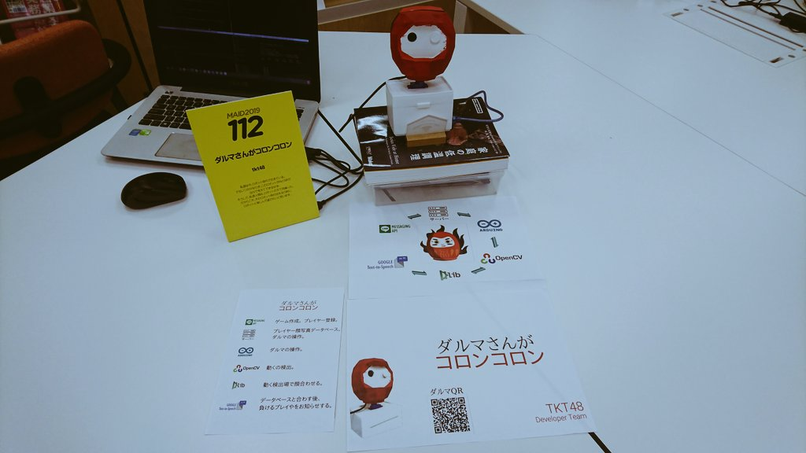
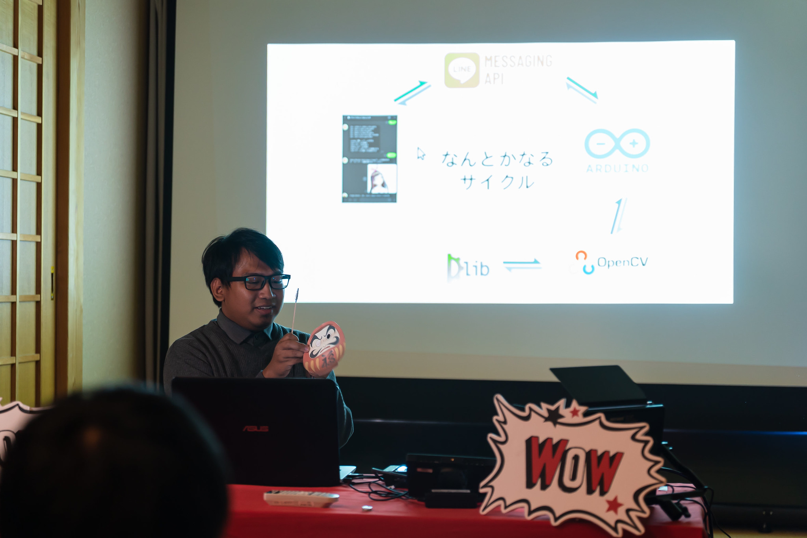
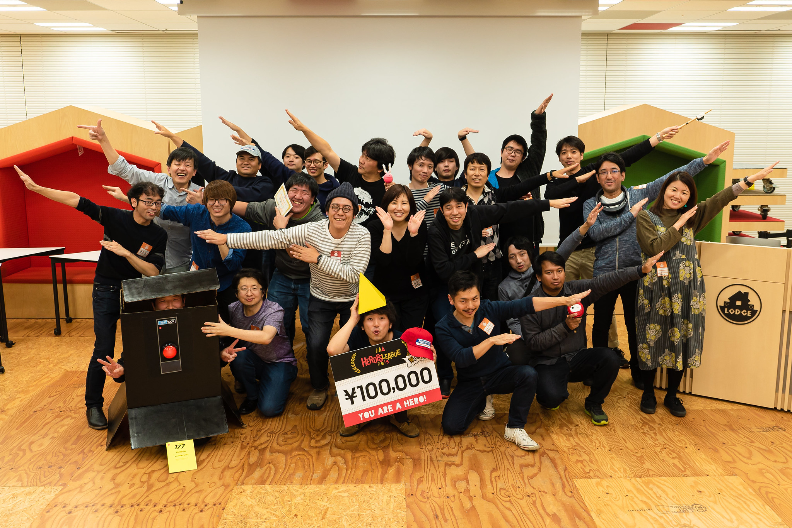

Daruma is Falling
I participated in the event called KuMAID, a hackathon held in Kumamoto city, Japan
as preliminary round. The winning work (JUST ONE VICTORY) will be entitled to make a presentation at the Heroes League 2019 MAID division finals.
The theme is Temple hack, a creation to make a temple interesting. I remember old Japanese stories
(maybe prior to Meiji era), that kids used to play Daruma game in the temple backyard. But with the advancement
of technology, not much kids are playing such classic game. So why don't we recreate the classic games
with these tech?

The fun story is, someday, in the future, with the raise of AI and robot tech, human are force to fight against
such force. And we are forced to play against robot. And the robot will be the daruma.
Robot is such a formidable foe, since they can detect even the smallest movement compared to human.
I don't think human can win. (>-< #)
The tech idea is using depth camera and some face recognition technology to detect player and their position (x, y, depth).
Turn out 2 years later, these device is seen on squid games (Korean drama). Haha
The detail of the event can be seen here.
Project Page : https://protopedia.net/prototype/1504
KuMAID :
https://kumaid2019-koyasai.peatix.com/
Heroes League :
https://togetter.com/li/1434069

